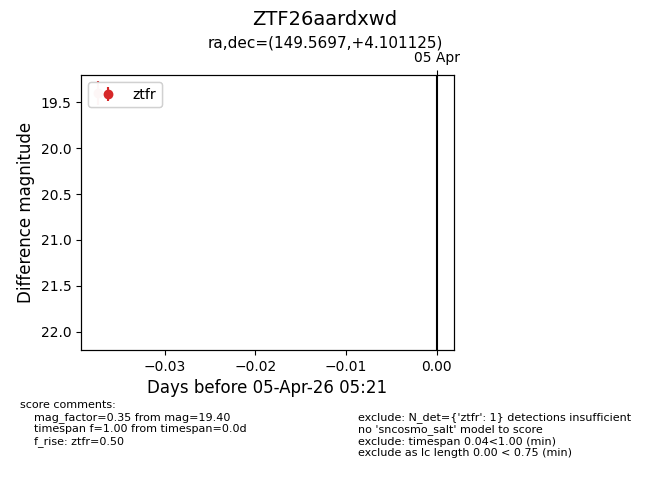
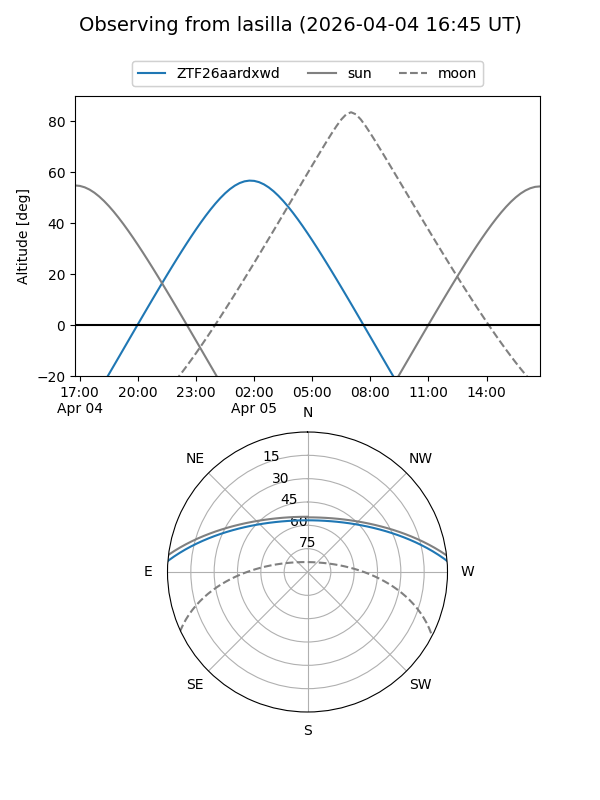
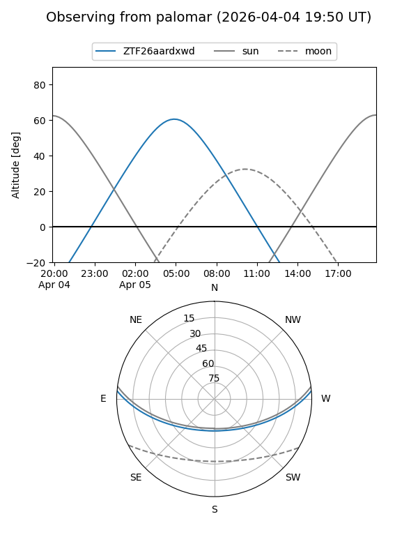

ZTF26aardxwd
Target ZTF26aardxwd at 2026-04-05 05:25
Aliases and brokers:
FINK: link
Lasair: link
ALeRCE: link
alt names
ZTF26aardxwd (ztf,fink_ztf)
Coordinates:
equatorial (ra, dec) = 149.5697,+4.10113
equatorial (HMS+DMS) = 09:58:16.74,+04:06:04.05
galactic (l, b) = (234.2868,+42.74761)
Flags:
Photometry:
last ztfr=19.40
1 ztfr detections
Lightcurve

Visibility


Additional plots